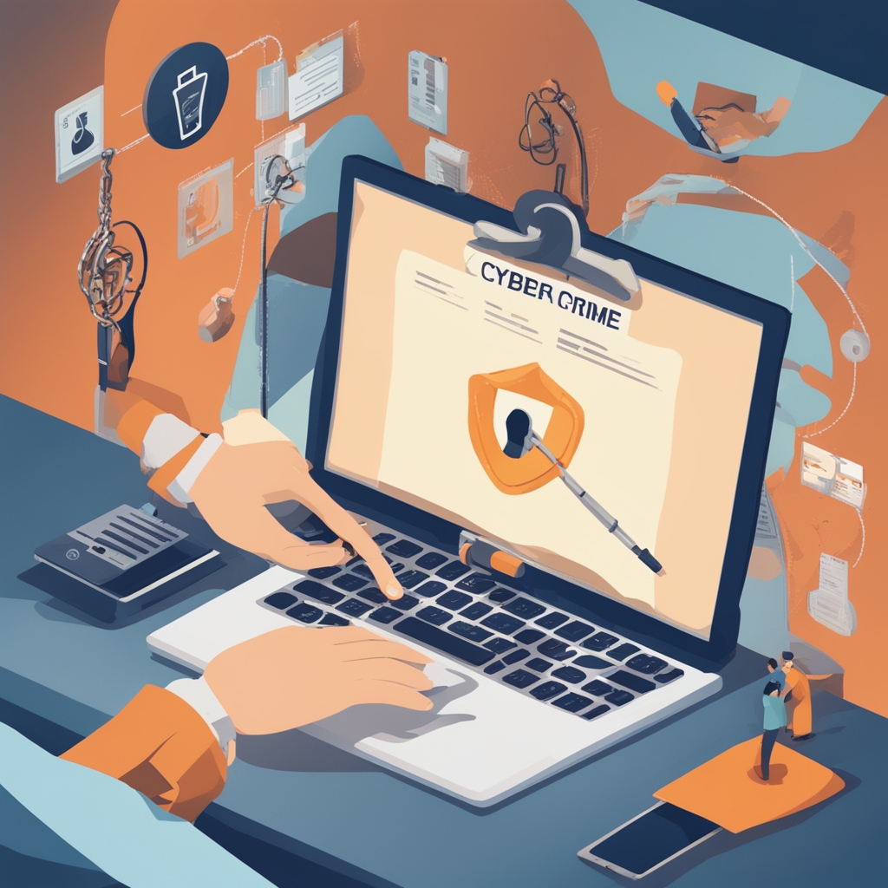

Embarking on our digital journey, the terms "cybersecurity," "cyber crime," and the art of "phishing" and "hacking" are more than mere buzzwords; they are critical aspects of our online existence. Let's delve into these realms and explore how to safeguard ourselves in this cyber age.
Cybersecurity is the bedrock of our digital defense, shielding against a myriad of threats. It encompasses a suite of technologies, practices, and processes designed to protect our online world from unauthorized access, data breaches, and cyber attacks. As we traverse this cyber frontier, understanding the essence of cybersecurity is paramount.
Cybersecurity acts as a digital shield, protecting against a range of threats in the online landscape.
Cyber crime, a shadowy presence in the digital landscape, manifests in various forms. From cunning phishing attempts tricking individuals into divulging sensitive information to sophisticated hacking incidents compromising entire systems, the threat is real and ever-evolving.
Cyber crime poses a significant threat, targeting individuals and organizations alike with nefarious intent.
Phishing, a deceptive tactic employed by cybercriminals, involves the use of misleading emails or messages to trick individuals into revealing sensitive information, such as passwords or credit card details. Cybersecurity awareness is our strongest defense against falling victim to these virtual traps.
Phishing attacks exploit human vulnerabilities, emphasizing the need for robust cybersecurity measures.
Hacking, once a term confined to computer enthusiasts, now carries a darker connotation. Cybercriminals, armed with advanced techniques, exploit vulnerabilities in systems to gain unauthorized access. Continuous improvement in cybersecurity practices, including regular software updates and strong passwords, is crucial in thwarting hacking attempts.
Hacking poses a significant threat, emphasizing the need for continuous improvement in cybersecurity practices.
Ensuring online safety is like wearing a seatbelt in a car—it's a basic precaution. Be cautious about the information you share online, use strong and unique passwords, and be mindful of the websites you visit. By practicing online safety, you create a digital environment that's more secure for everyone.
Being safe online involves simple but crucial steps. Update your software regularly, be wary of suspicious emails or links, and use antivirus software. These small actions go a long way in keeping your online experience secure and enjoyable.
Here are some practical cyber security tips:
As we navigate the cyber frontier, armed with knowledge and fortified by cybersecurity practices, we contribute to a safer online environment. Stay informed, be vigilant against cyber threats, and let us collectively shape a secure digital future.
© 2024 Bishal Gaire. All Rights Reserved.